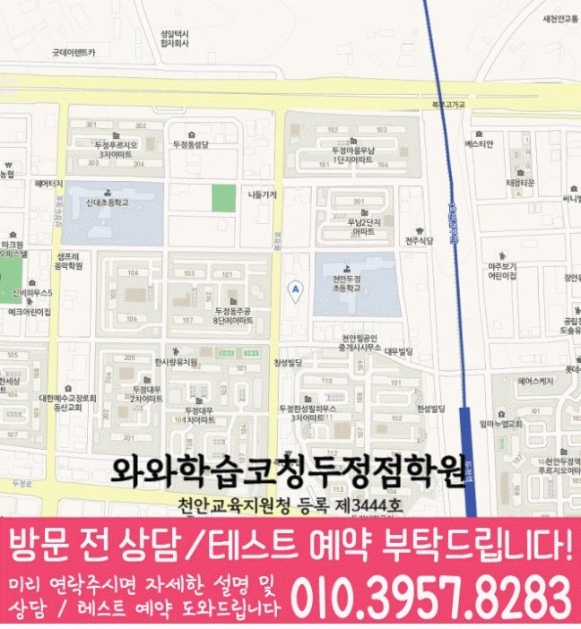

30초 핵심 안내
두정동 영수학원 선택 전 확인할 기준
두정동에서 영수학원을 비교할 때에는 과목 수보다 학교 학습과 영어 이해 과정과 수학 풀이 과정의 구분이 한 주 계획으로 이어지는지 확인해야 합니다. 제공 주소는 충청남도 천안시 서북구 두정동 봉정로 382 성광빌딩 3층이고, 제공된 학교 참고 정보는 두정초·신대초·두정중·성성중·성정중·오성고·두정고·신당고·업성고이며 학생별 우선순위는 실제 학습 자료를 근거로 정합니다.
English & Math Learning Guide
두정동 영수학원 상담 전 살펴볼 학교 학습 흐름, 과목별 진도와 누적 복습의 균형, 영어·수학 오답과 주간 계획을 제공 센터 정보로 정리했습니다.
30초 핵심 안내
두정동에서 영수학원을 비교할 때에는 과목 수보다 학교 학습과 영어 이해 과정과 수학 풀이 과정의 구분이 한 주 계획으로 이어지는지 확인해야 합니다. 제공 주소는 충청남도 천안시 서북구 두정동 봉정로 382 성광빌딩 3층이고, 제공된 학교 참고 정보는 두정초·신대초·두정중·성성중·성정중·오성고·두정고·신당고·업성고이며 학생별 우선순위는 실제 학습 자료를 근거로 정합니다.
수업 안내 이미지

센터 위치 안내

두정동에서 영수학원을 비교하는 가장 구체적인 방법은 과목 시간 배분과 맞힌 문제 제외가 겹친 학생의 영어·수학 결과물을 같은 주간표에서 대조하는 것입니다. 구체적으로 생각해 볼 학생은 초5·초6 학생 가운데 여러 단원의 과제가 겹치면 영어 복습과 수학 연습 시간을 함께 배분하지 못하는 학생이며, 맞힌 문제는 과정이 불안해도 복습 대상에서 제외하는 편입니다. 두 과목에 걸친 어려움이므로 영어 복습 간격과 수학 시간 배분을 각각 다른 자료로 확인하며, 과목 시간 배분 보완 기준과 맞힌 문제 제외 조정 기준은 서로 다른 자료에서 확인합니다. 두정동 상담에서는 최근 영어 답안과 수학 풀이를 나란히 놓고 과목별 진도와 누적 복습의 균형에 관한 단서를 확인합니다. 학부모에게 필요한 것은 성과를 단정하는 표현이 아니라 영어·수학의 변화 과정을 확인할 질문이므로 이를 차례로 제시하며, 초5·초6 학생의 출발점은 과목 시간 배분 기록과 맞힌 문제 제외 기록을 나누어 설명합니다.
두정동 영수학원 상담은 학생의 현재 교재와 최근 오답을 확인한 뒤 현실적인 통원 일정까지 맞추는 과정입니다. 제공 자료에 기재된 충청남도 천안시 두정동 센터 주소는 충청남도 천안시 서북구 두정동 봉정로 382 성광빌딩 3층입니다. 영어·수학 공통 가능 학년은 초5·초6·중1·중2·중3·고1·고2입니다.
두정동의 학교 참고 목록은 두정초·신대초·두정중·성성중·성정중·오성고·두정고·신당고·업성고입니다. 학교 이름을 반복해 홍보하기보다 현재 범위와 학생의 풀이 기록을 함께 확인해야 과목별 학습 순서를 현실적으로 정할 수 있습니다.
제공 자료에는 와와학습코칭센터 두정점의 등록번호로 천안교육지원청 등록 제3444호가 표시되어 있습니다. 두정동 학부모는 이 정보와 교습비 자료를 확인한 뒤 수업 시간뿐 아니라 과제 확인과 재학습 방식까지 질문하는 편이 좋습니다.
학생의 초기 자료는 영어 복습 간격, 수학 시간 배분과 관련된 최근 기록과 확인 문제를 따로 담는 방식이 도움이 됩니다. 진단 뒤 초5·초6 학생이 바꿀 행동 하나와 그 결과를 볼 날짜가 남는지도 선택 기준입니다. 진단 결과는 학생을 분류하는 데 그치지 않고 이후 문제 선택과 복습 순서로 이어져야 하며, 진단표에는 과목 시간 배분 보완 자료와 맞힌 문제 제외 조정 기록을 다른 칸에 둡니다.
두정초 학생이 이 지역 학원을 알아볼 때는 학교에서 별도 평가 일정이나 학습 범위를 안내받았는지부터 점검해야 합니다. 학교 이름만으로 평가 방식을 미리 정하지 않으며, 과목 시간 배분 보완 자료와 맞힌 문제 제외 조정 기록은 학교별 추정과 분리합니다. 신대초 학생은 상담에서 현재 교재와 필기, 학교가 안내한 범위를 함께 보여 주면 과목별 복습 질문을 더 정확히 만들 수 있습니다. 제공 자료에서 확인한 주소는 '충청남도 천안시 서북구 두정동 봉정로 382 성광빌딩 3층'입니다. 학생은 학교와 가정 중 실제 출발 장소를 기준으로 등하원 동선을 점검해야 하며, 이동 조건은 과목 시간 배분 보완과 맞힌 문제 제외 조정과 구분해 기록합니다. 학교에서 평가 범위를 따로 알린 경우에는 학생의 주간표에 반영하되 평소 일정은 영어와 수학의 반복 습관을 기준으로 구성합니다.
영어는 어휘 인출·문장 구조·독해 근거를, 수학은 개념 이해·조건 해석·풀이 과정을 나누어 살펴봅니다.
두정동 영어·수학 계획에는 과목별 시작 자료, 완료 기준과 다음 오답 확인 날짜를 각각 남기는 편이 좋습니다.
초5~초6, 중1~중3, 고1~고2 학생은 두 과목의 과제량을 같게 맞추기보다 혼자 할 수 있는 단계와 도움이 필요한 단계를 먼저 구분해야 합니다.
학생의 영어 자료에서는 복습 간격을 한 가지 확인 항목으로 두고, 구체적으로 배운 날·이틀 뒤·일주일 뒤에 같은 표현을 다른 문맥에서 다시 꺼내는 연습이 가능한지 살펴볼 수 있습니다. 학부모는 틀린 어휘가 다음 독해와 문장 쓰기에 이어지는지 질문해 암기와 적용을 구분할 수 있고, 영어 복습 간격 점검 결과와 맞힌 문제 제외 조정 기록은 따로 남깁니다. 정답 수만으로는 부족하므로 학생이 지문 속 근거를 짚고 해석 과정을 설명하는지도 확인해 두어야 합니다. 두정동에서는 교재 브랜드보다 학생이 어휘, 구문, 내용 판단 중 어디에서 멈췄는지를 기록해야 합니다.
학생은 틀린 문제마다 개념을 몰랐는지, 조건을 놓쳤는지, 계산이나 시간 배분에서 흔들렸는지를 표시할 수 있고, 학생의 수학 과제에서는 시간 배분 점검 결과와 맞힌 문제 제외 실행 여부를 구분합니다. 학생의 수학 학습관리 기록에는 틀린 문항 번호뿐 아니라 첫 시도와 두 번째 시도의 풀이 차이가 남는 편이 안정적이며, 과목 시간 배분 보완은 전체 학습 자료에서, 수학 시간 배분은 풀이 결과에서 따로 살핍니다. 학생의 보호자는 문제 수가 늘었다는 보고보다 같은 유형을 며칠 뒤에도 설명 없이 풀었는지, 실수 패턴이 줄었는지를 질문할 수 있습니다. 수학의 선행 여부는 학생이 이전 단원 핵심 문제를 스스로 완결하는지 보고 판단해야 하며, 수학 시간 배분 점검 결과와 맞힌 문제 제외 조정 기록은 따로 남깁니다.
학생을 대상으로 한 영수학원 상담 뒤에는 한 번의 진단으로 결론을 내리기보다 짧은 점검 주기를 정하는 것이 좋습니다. 첫 주에는 학생의 영어 복습 간격과 수학 시간 배분을 살필 수행 기록과 문제 풀이를 보관하고 수업 조건은 별도 칸에 적습니다. 두정동에서는 한 주의 완료율만 보지 않고 학생이 스스로 시작하고 다시 설명한 장면을 함께 점검합니다. 천안시 두정동에서는 학습량의 많고 적음보다 누적된 기록을 보고 다음 진도와 복습 비중을 정해야 합니다.
Information Basis
센터명·주소·등록번호·학교 참고 목록은 제공 자료 범위에서 확인했습니다. 실제 수업 가능 학년과 과목, 시간표는 상담 시점에 다시 확인해야 합니다.
FAQ
학생의 보호자는 최근 평가 자료만 챙기기보다 학생이 직접 표시한 영어 질문, 수학 재풀이, 과제 시작 시각을 준비하는 것이 좋습니다. 이 자료가 있으면 학생의 현재 어려움을 점수 대신 구체적인 행동으로 설명할 수 있고, 준비한 자료에서 과목 시간 배분 보완 단서와 맞힌 문제 제외 조정 단서를 구분합니다.
영어 과제는 읽기·회상 단위로, 수학 과제는 풀이·재풀이 단위로 보는 것이 실용적이며, 영어·수학 분량과 맞힌 문제 제외 조정 기준은 각각 다른 칸에 기록합니다. 두정동에서는 영어 복습 간격과 수학 시간 배분을 확인 항목으로 두되 실제 자료에서 약점이 드러난 과목에 시간을 더 배정할 수 있습니다.
두정초 학생은 현재 교재와 학교가 알린 평가 범위를 상담의 기준으로 삼으면 됩니다. 가정은 확인되지 않은 다른 학교의 특징을 추가하지 않으며, 과목 시간 배분 보완과 맞힌 문제 제외 조정은 학교 정보가 아니라 학생의 학습 기록에서 확인합니다. 두정동에서는 생활권 정보와 학교별 평가 자료를 서로 다른 정보로 다룹니다.
최근 영어 답안에서는 어휘·문장 구조·독해 근거를, 수학 풀이에서는 개념·조건 해석·계산·검산을 따로 표시합니다. 두정동 상담에서는 이 기록을 바탕으로 영어 이해 과정과 수학 풀이 과정의 구분을 점검하고 과목별 첫 과제와 다음 확인 날짜를 정합니다.
Parent Perspective
※ 두정동 학부모가 상담에서 확인할 상황을 재구성한 예시이며, 실제 수강 후기나 특정 성적 결과가 아닙니다.
저희는 자녀의 과목 시간 배분과 맞힌 문제 제외를 하나의 성격 문제로 단정하지 않고 기록으로 나누어 보려고 합니다. 영어는 복습 간격을, 수학은 시간 배분을 먼저 점검하고 실제로 더 막힌 과목에 시간을 배분하겠습니다. 영어는 어휘 인출·문장 구조·독해 근거를, 수학은 개념 이해·조건 해석·풀이 과정을 나누어 살펴봅니다.